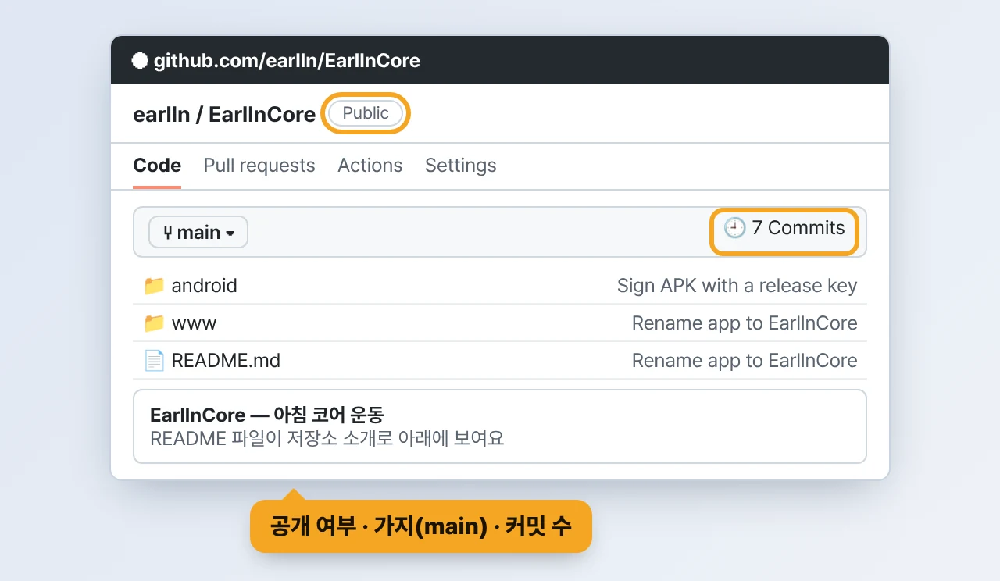
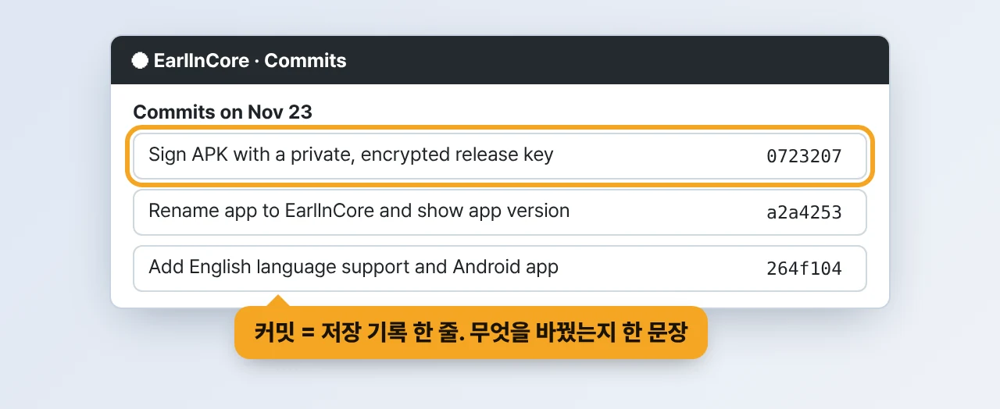
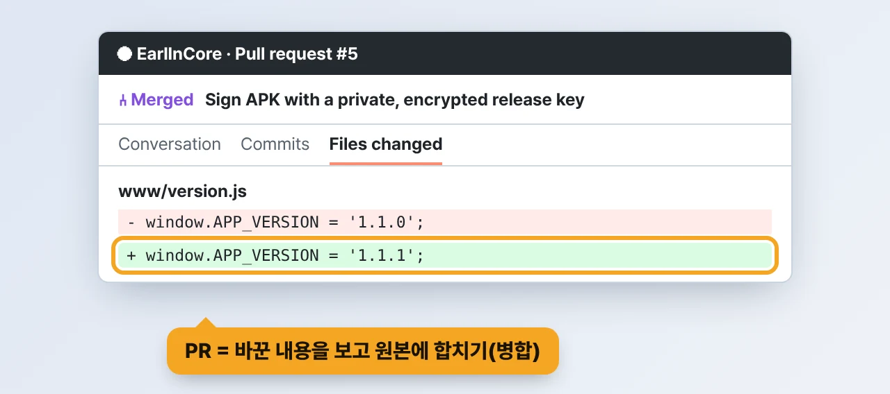
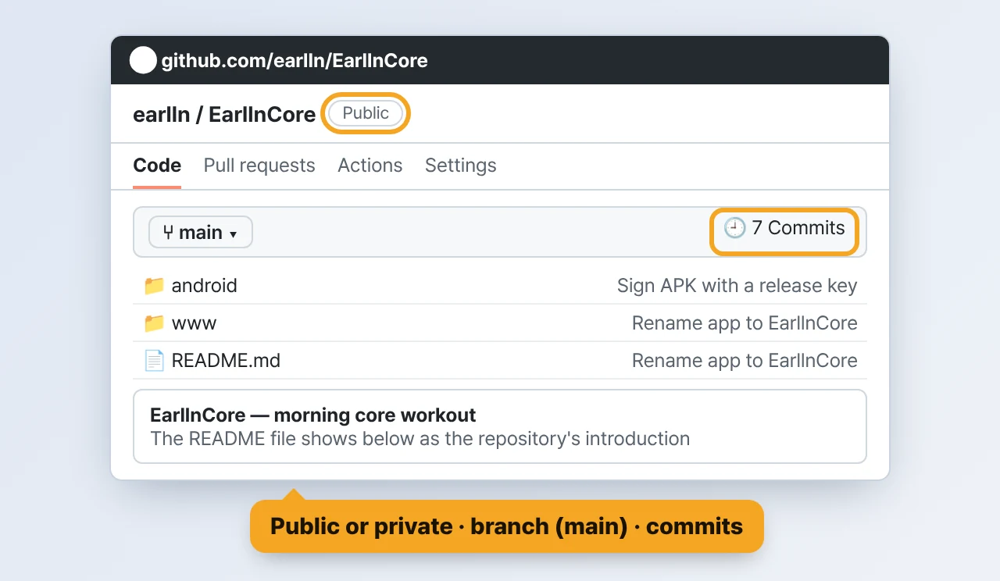
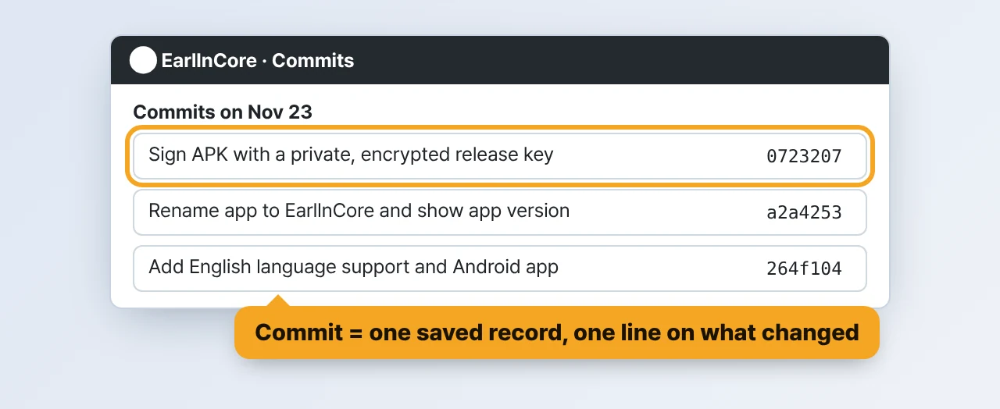
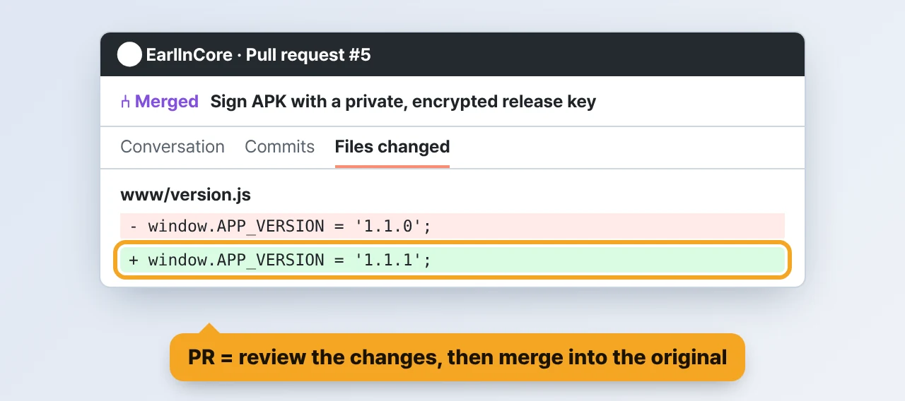

👆 이 내용은 버튼 따라 하는 실습으로도 있어요. 처음이라면 실습으로 직접 해 보고, 이 글은 복습할 때 보세요. 실습 시작하기 →
※ 글 속 그림은 따라 하기 쉽도록 그린 예시입니다. 실제 GitHub 화면과 모양·글자가 조금 다를 수 있어요.
이게 뭔가요?
휴대폰으로 일 시키기(휴대폰 2·3)와 앱 만들기(앱 2·3)에는 GitHub가 나와요. 이 글에서는 진짜 저장소 하나를 구경만 하면서 꼭 필요한 낱말 7개를 익혀요. 가입하지 않아도 돼요.
함께 볼 저장소: 얼른닷컴 운동 앱 EarllnCore ↗
1. GitHub는 이런 곳이에요
파일을 인터넷에 보관하는 서비스예요. 그냥 보관함과 다른 점은 세 가지예요.
- 기록이 남아요 — 누가, 언제, 무엇을 바꿨는지 전부.
- 되돌릴 수 있어요 — 망가져도 예전 상태로.
- 바꾸기 전에 검토해요 — 바뀐 내용을 보고 '합칠지' 정해요.
그래서 Claude가 클라우드에서 일할 때 GitHub를 써요. Claude가 고친 것을 내가 보고 허락할 수 있으니까요.
2. 저장소(Repository)

- 저장소: GitHub 안의 폴더 하나. 앱 하나, 메모 묶음 하나처럼 한 가지 일마다 하나씩 만들어요.
- Public · Private: 이름 옆 표시. Public은 누구나, Private은 나만 볼 수 있어요.
- README: 저장소 소개 글. 파일 목록 아래에 보여요.
3. 커밋(Commit) = 저장 기록
파일 목록 위의 🕘 Commits를 누르면 기록 목록이 나와요. 게임의 '저장'처럼, 바꾼 내용을 한 번 저장할 때마다 한 줄이 생기고 무엇을 바꿨는지 한 문장이 붙어요.

4. 브랜치(Branch) = 사본 가지
- main: 원본 가지. 앱의 "정식 버전"이에요.
- 다른 브랜치: 원본을 건드리지 않고 따로 고쳐 보는 사본. Claude가 클라우드에서 일하면 늘 새 브랜치에 저장해요.
5. PR(풀 리퀘스트)과 병합(Merge)
EarllnCore의 닫힌 PR 목록 ↗에서 하나를 열고 Files changed를 보세요.

- PR: "이 가지를 원본에 합쳐도 될까요?"라는 검토 요청.
- Files changed: 빨강은 지운 줄, 초록은 새 줄. 데스크톱 2의 허락 카드와 같아요.
- 병합: 검토하고 원본에 합치기. 클라우드에서는 이게 최종 허락이에요.
6. 릴리스 · Pages · Actions
- 릴리스(Releases): 사람들이 내려받는 완성본. EarllnCore의 안드로이드 앱(APK)이 여기 있어요.
- GitHub Pages: 저장소 파일을 무료 웹사이트로 보여 주는 기능. 앱 2·3에서 써요.
- Actions: 정해 둔 일을 자동으로 하는 로봇. EarllnCore는 병합할 때마다 APK를 만들어요.
꼭 지킬 세 가지
- 비밀번호·API 키·개인정보는 저장소에 넣지 않기. Public 저장소는 지난 기록까지 누구나 볼 수 있어서, 실수로 올렸다면 지우는 것만으론 부족해요. 그 키를 새로 바꾸세요.
- 메모·업무 자료는 Private, 누구나 볼 앱만 Public.
- Claude 앱은 고른 저장소만(Only select repositories)에 설치.
오늘 배운 낱말
| 낱말 | 한 줄 뜻 |
|---|---|
| 저장소 | GitHub 안의 폴더 하나 (Public · Private) |
| 커밋 | 저장 기록 한 줄 |
| 브랜치 | 원본(main)을 건드리지 않는 사본 가지 |
| PR | 바꾼 내용을 원본에 합쳐도 될지 묻는 검토 요청 |
| 병합 | 검토하고 원본에 합치기 = 최종 허락 |
| 릴리스 | 내려받는 완성본 |
| Pages | 저장소를 무료 웹사이트로 |
* The pictures are drawn examples to make the steps easy to follow. Real GitHub screens may look slightly different.
What is this?
GitHub comes up in phone jobs (Phone 2·3) and building apps (App 2·3). In this guide you'll just look around a real repository and learn the 7 words you need. No sign-up needed.
The repository: Earlln's workout app EarllnCore ↗
1. This is what GitHub is
A service that keeps files on the internet. It differs from plain storage in three ways.
- It keeps a history — who changed what, and when.
- You can go back — even if something breaks.
- Changes get reviewed — you look at them and decide whether to 'merge'.
That's why Claude uses GitHub when working in the cloud: you can see and approve what it changed.
2. Repository

- Repository: one folder inside GitHub. Make one per thing: one app, one set of notes.
- Public · Private: the label next to the name. Public: anyone can see it. Private: only you.
- README: the repository's introduction, shown below the file list.
3. Commit = a saved record
Tap 🕘 Commits above the file list to see the history. Like 'saving' in a game, each save adds one line with one sentence on what changed.

4. Branch = a side copy
- main: the original. The app's "official version".
- Other branches: a side copy for trying changes without touching the original. Claude always saves to a new branch when working in the cloud.
5. PR (pull request) and merge
Open one of EarllnCore's closed PRs ↗ and look at Files changed.

- PR: a review request: "May I merge this branch into the original?"
- Files changed: red is removed, green is added. Just like the permission cards in Desktop 2.
- Merge: review and combine into the original. In the cloud, this is your final permission.
6. Releases · Pages · Actions
- Releases: the finished version people download. EarllnCore's Android app (APK) is here.
- GitHub Pages: serves repository files as a free website. Used in App 2–3.
- Actions: a robot that does set jobs automatically. For EarllnCore, it builds the APK on every merge.
Three rules to keep
- Keep passwords, API keys and personal data out of repositories. Anyone can see a Public repository's past history too, so if you upload one by mistake, deleting isn't enough: replace the key.
- Notes and work files go Private; only apps for everyone go Public.
- Install the Claude app on selected repositories only.
Words you learned today
| Word | In one line |
|---|---|
| Repository | One folder in GitHub (Public · Private) |
| Commit | One saved record |
| Branch | A side copy that leaves the original (main) alone |
| PR | A review request to merge changes into the original |
| Merge | Review and combine into the original = final permission |
| Release | The finished version to download |
| Pages | A repository as a free website |
Now make your own repository in Phone guide 2, or share your app in App guide 2.